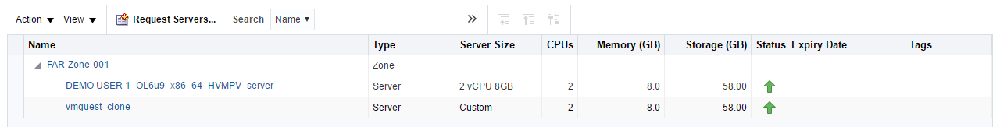
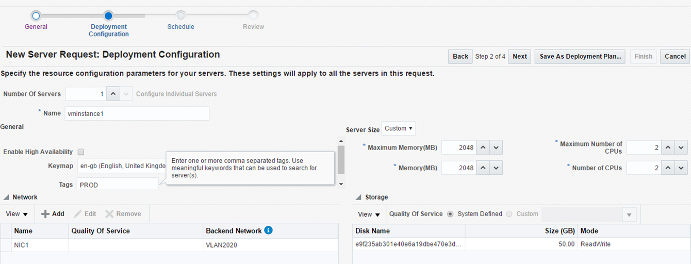
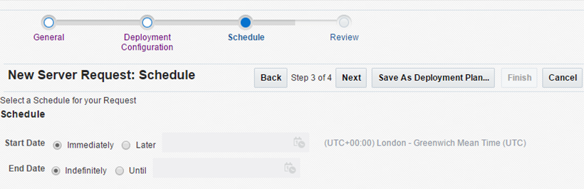
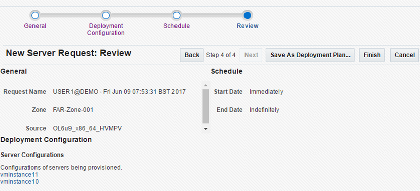
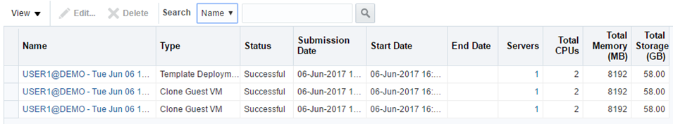

How to build an Oracle virtual machine
Overview
UKCloud for Oracle Software provides Infrastructure-as-a-Service (IaaS), powered by Oracle VM (OVM) technology, that is fully compliant with the compatibility and licensing requirements of Oracle-based enterprise applications.
Intended audience
To complete the steps in this guide you must have access to Oracle Enterprise Manager Cloud Control.
Viewing information about your Oracle VMs
To view information about your Oracle VMs, go to the Oracle VM Cloud Services page of the OEM Cloud Control console.

On the Oracle VM Cloud Services page you can:
Click the Requests icon to view and manage all your requests.
Click the Servers icon to view and manage all your VM instances.
Click the Storage icon to view and manage all the storage associated with your VMs.
Click the Chargeback icon to view billing details.
Click the Library icon to view all public templates and templates that you own.
Click the Policies icon to view policies and schedules that you can apply to your VMs.
The Notifications section provides useful information about what's happening in your UKCloud for Oracle Software environment.
The Usage section displays the currently available quotas for VMs, CPUs, memory and storage.
The 10 Last Requested Servers section lists the last ten VMs that you've requested. If you own more than 10 VMs, click the Servers icon to view them all.
The 10 Latest Requests section lists the details and status of the last ten requests you've made. To view all requests, click the Requests icon.
Click the Home icon at any point to return to the Oracle VM Cloud Services page.
Building an Oracle VM
To build an Oracle VM, you need to raise a server request. Each request can include one or more VM instances.
Log in to the Oracle Enterprise Manager Cloud Control console at:
https://ecco.r00006.frn.ukcloud.com/em
For more detailed instructions, see the Getting Started Guide for UKCloud for Oracle Software.
On the Oracle VM Cloud Services page, click the Servers icon.

The Servers page lists all the servers you've requested, grouped by zone. You can also view template deployments.

To create a VM, click the Request Servers icon.

In the New Server Request wizard, on the General page:
Enter a Name for the request. This is displayed on the Requests page to help you identify your request and track its progress.
From the Zone list, select the UKCloud zone in which you want to create the VM.
In the Source field, specify the template that you want to use for the VM, for example, OL6u9_x86_64_HVMPVOL6u9_x86_64_HVMPV.
Note
You can choose from public templates (provided by UKCloud) or templates that you've created yourself. Use the search icon next to the field to help locate the required template if necessary.
Click Next.

On the Deployment Configuration page:
You can create multiple VMs in a single request. From the Number Of Servers list, select the number of VMs that you want to create.
If you're creating more than one VM, click Configure Individual Servers if you want to configure each VM separately. If you do not click this link, the configuration you specify is applied to all VMs in the request.
Enter a Name for the VM. If there are multiple VMs in the request, a number is added to the end of each VM to ensure uniqueness
Note
Click Configure Individual Servers to name each VM individually.
Select Enable High Availability to enable high availability for the VM.
From the Keymap list, select the keyboard type for the VM.
In the Tags field, enter tags to identify the VM. This helps to find VMs during searches.
From the Server Size list, select a pre-configured option or select Custom if you want to specify your own settings.
If you select Custom, specify the Maximum Memory, Memory, Maximum Number of CPUs and Number of CPUs settings for the VM(s).
In the Networks section, click Add and select the network interface card to use for the VM(s).
The Storage section shows the disk used for VM storage.
Click Next.

On the Schedule page, you can choose to start request immediately or schedule it for a later time. You can also select to allow the request to run indefinitely or to end it by a specified time. When you're done, click Next.

On the Review page, check the details of your request and then click Finish. If you want to change any details, use the Back button to return to the previous steps of the request.

You can click Save as Deployment Plan to save the request as deployment plan that you can use as a template for other requests.
A Confirmation notification lets you know that your request has been submitted. You can track the request on the Oracle VM Cloud Services or Requests pages.
More information! Monitoring your VM requests

Monitoring your VM requests
On the Requests page, you can view and edit all requests.
Log in to the Oracle Enterprise Manager Cloud Control console at:
https://ecco.r00006.frn.ukcloud.com/em
For more detailed instructions, see the Getting Started Guide for UKCloud for Oracle Software.
On the Oracle VM Cloud Services page, click the Requests icon.

On the Requests page, you can view the following information for each request, including:
The type of request
The current status of the request: Successful, Partially Successful, In Progress, Scheduled, Error Scheduling, Execution Error, Error Ending, Ended
The dates when the request was submitted, started and completed.
The number of servers included in the request
The total CPU, memory (in MB) and storage (in GB) consumed by the request across all servers

To edit a request, select the request and click the Edit icon. The request must have a status of Scheduled.
To delete a request, select the request and click the Delete icon. For auditing purposes the request must have a status of Scheduled, Error Scheduling, Execution Error or Error Ending.
Next steps
For a general overview of UKCloud for Oracle Software, see the Getting Started Guide for UKCloud for Oracle Software.
Related videos
Feedback
If you find an issue with this article, click Improve this Doc to suggest a change. If you have an idea for how we could improve any of our services, visit UKCloud Ideas. Alternatively, you can contact us at products@ukcloud.com.